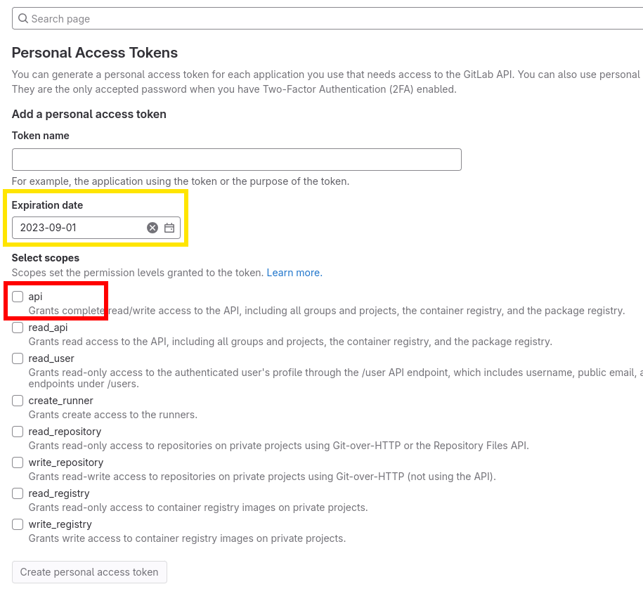
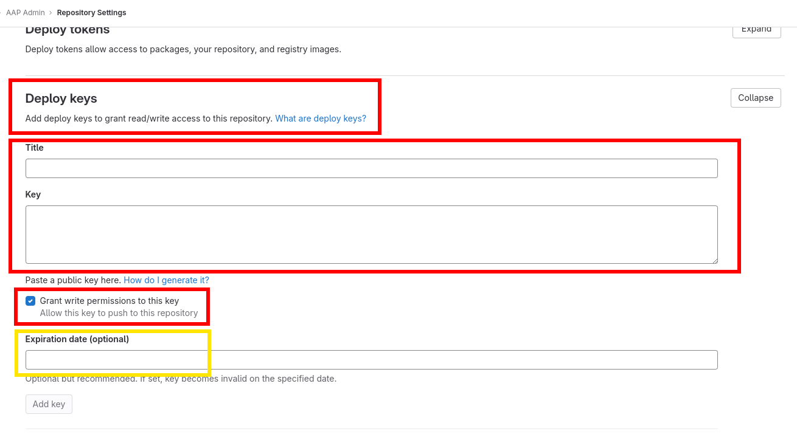
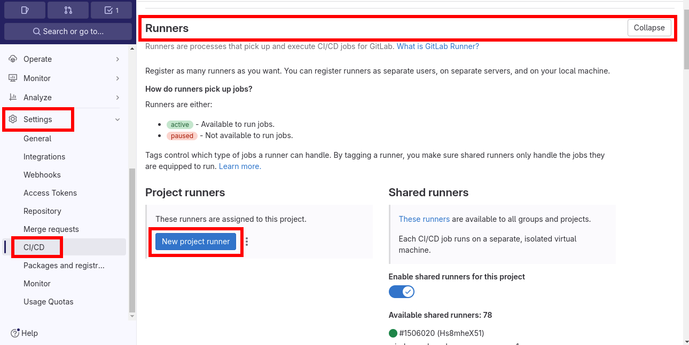
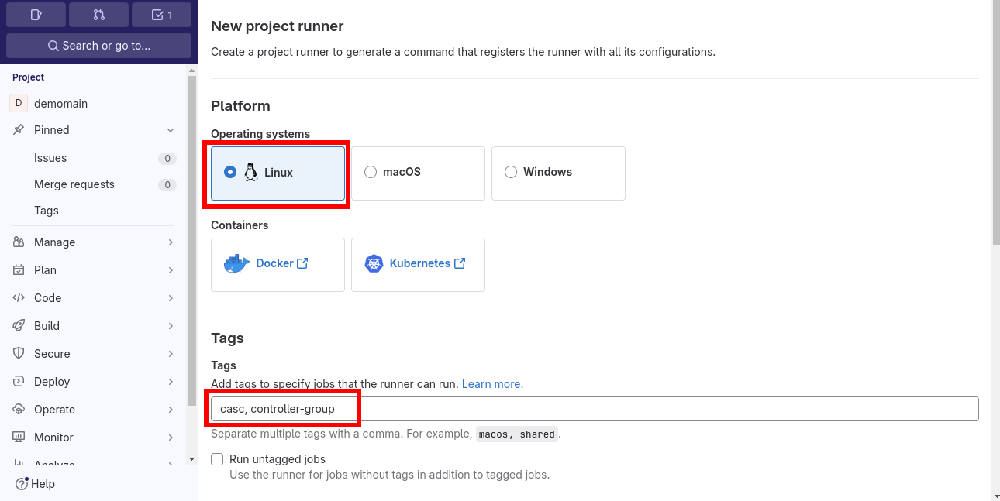
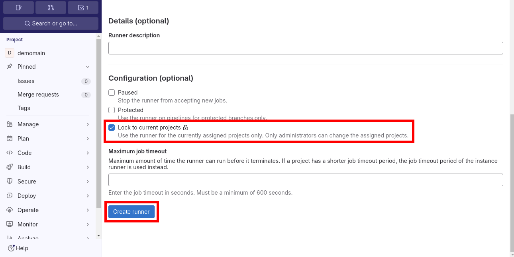
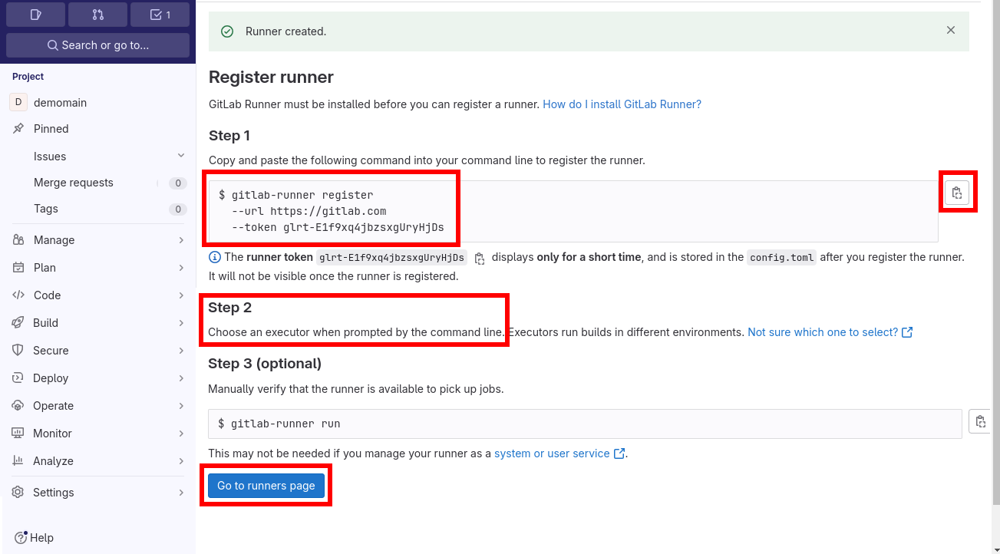
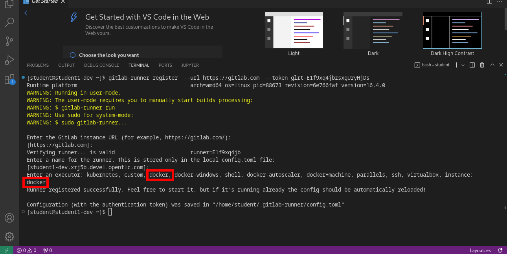

Day-0: Create SuperAdmin organization directory structure and initial files
The following lines will show the organization directory structure creation:
-
group_vars, which will contain the credentials to reach the Ansible Automation Controller -
orgs_varsdirectory, which will contain all the organization object files.
|
All the steps below are meant to be locally executed from the base directory of the cloned repository. |
1. Pre-Requisites
The only prerequisite to run this lab is an existing personal GitLab account where you must:
-
Create an empty GitLab repository for this workshop.
The name of the repository must be the same as the name of the organization that is being created in the next steps of the lab (see the variable SUPERADMIN_ORG).When creating the new repository, be sure to uncheck the
Initialize repository with a READMEcheckbox. All the files for the repo will be created from scratch and synchronized during this lab.The creation process for the new repository is not in the scope of the current workshop. For more info see: Create a repository on Gitlab.com
-
Go to the URL https://gitlab.com/-/profile/personal_access_tokens and create a new personal access token with
apiscope:For more information related to the personal access token creation, take a look at Create a personal access token on GitLab Grab the generated personal access token to be used later. -
Configure a ssh key pair to access your empty project with write access:
ssh-keygen -f ~/.ssh/id_rsa_gitlab echo -e "\nCopy the following public key to your GitLab project:\n" cat ~/.ssh/id_rsa_gitlab.pubAny key type can be used. The possible values are dsa,ecdsa,ecdsa-sk,ed25519,ed25519-sk, orrsa.For more information related to configure the SSH access to your GitLab account see: Use SSH to communicate with GitLab
2. Export all the variables to be used in the next steps
| These variables are undefined when you close your terminal session, so they need to be populated each time you open a new terminal. |
<CHANGE_ME> has to be customizedexport PROJECT_URL_CASC_SETUP='https://github.com/automationiberia/casc_setup.git'
export CONTROLLER_DEV_HOST='<CHANGE_ME>'
export CONTROLLER_PRO_HOST='<CHANGE_ME>'
export SUPERADMIN_ORG='<CHANGE_ME>'
export PROJECT_URL_CASC='<CHANGE_ME>'
export SSH_PRIVATE_KEY_FILE='<CHANGE_ME>'
export GITLAB_USERNAME='<CHANGE_ME>'
export GITLAB_API_TOKEN='<CHANGE_ME>'
export GITLAB_EMAIL='<CHANGE_ME>'
export VAULT_PASSWORD='<CHANGE_ME>'
export AAP_USER_NAME='<CHANGE_ME>'
export AAP_USER_PASSWORD='<CHANGE_ME>'
export AAP_USER_EMAIL='<CHANGE_ME>'
export AAP_USER_FIRSTNAME='<CHANGE_ME>'
export AAP_USER_LASTNAME='<CHANGE_ME>'
export ADMIN_DEV_PASSWORD='<CHANGE_ME>'
export ADMIN_PRO_PASSWORD='<CHANGE_ME>'Where:
-
CONTROLLER_DEV_HOST: the hostname or IP address for the Automation Controller server (dev instance)
-
CONTROLLER_PRO_HOST: the hostname or IP address for the Automation Controller server (pro instance)
-
SUPERADMIN_ORG: Superadmin organization name
-
PROJECT_URL_CASC: Project URL created at the first step for CasC (SSH format)
-
GITLAB_USERNAME: GitLab user name
-
SSH_PRIVATE_KEY_FILE: the private SSH key file that corresponds to the public SSH key attached to your gitlab account (see prerequisites).
-
GITLAB_API_TOKEN: The Personal access token to let the New Organization Creation process to work as expected (must be able to create new projects into GitLab).
-
GITLAB_EMAIL: GitLab user email address
-
GITLAB_API_USER: GitLab user name
-
VAULT_PASSWORD: Ansible Vault password
-
AAP_USER_NAME: AAP User name
-
AAP_USER_PASSWORD: AAP User password
-
AAP_USER_EMAIL: APP User email address
-
AAP_USER_FIRSTNAME: APP User first name
-
AAP_USER_LASTNAME: APP User last name
3. Housekeeping
For more information about the steps below, see the Step by step tab.
A script to be executed in the terminal is provided:
mkdir "${SUPERADMIN_ORG}" && cd "${SUPERADMIN_ORG}"
curl -s "https://raw.githubusercontent.com/automationiberia/controller-casc-cd/improvements/documentation/modules/ROOT/examples/housekeeping.sh" | bashThe script contents can also be Copied and Pasted:
// include::../examples/housekeeping.sh[]mkdir "${SUPERADMIN_ORG}" && cd "${SUPERADMIN_ORG}".gitignore file to avoid accidentally uploading undesired files to the GitLab repository:cat > .gitignore <<EOF
//include::../examples/dot.gitignore[]
EOF.yamllint.yml to run basic syntax checks:cat > .yamllint.yml <<EOF
//include::../examples/dot.yamllint.yml[]
EOF.gitlab-ci.yml to run lintering and create tags+releases when pushes are against the main branch:cat > .gitlab-ci.yml <<'EOF'
//include::../examples/dot.gitlab-ci.yml[]
EOFAdditionally, a GitLab Runner instance must be created and configured to allow the GitLab Actions to be executed at gitlab.com. The previous step has already executed some actions to ease the configuration (See housekeeping.sh), so following are the remaining steps:
-
Configure the
DEVAnsible Controller host to be docker compatible:sudo dnf install -y podman-docker sudo systemctl enable --now podman.socket -
In the GitLab repository created at the first step, go to
Settings→CI/CD→Runners→Project Runners→New Project Runner:
-
Select
Linuxfor the Platform and write downcasc, controller-groupto thetagsfield:
-
Select the
Lock to current projectsoption for the new runner:
For the given command to work as expected, the following alias must be defined prior the registration of the new runner:
alias gitlab-runner='sudo gitlab-runner' -
Run the given command to the assigned
DEVcontroller server (using VSCode Terminal or SSH connection):
Enter the
dockerexecutor when asked:
4. Create the ansible inventory file for the environment
cat > inventory <<EOF
//include::../examples/inventory.ini[]
EOF5. Create the automation directories structure
mkdir -p group_vars/{all,dev,pro}
mkdir -p orgs_vars/${SUPERADMIN_ORG}/env/{dev,pro}/controller_{instance_groups.d,hosts.d/app-casc,users.d,execution_environments.d/app-casc,settings.d/jobs,settings.d/user_interface,settings.d/authentication,settings.d/system,inventory_sources.d,credentials.d}
touch orgs_vars/${SUPERADMIN_ORG}/env/{dev,pro}/controller_{instance_groups.d,hosts.d/app-casc,users.d,execution_environments.d/app-casc,settings.d/jobs,settings.d/user_interface,settings.d/authentication,settings.d/system,inventory_sources.d,credentials.d}/.gitkeep
mkdir -p orgs_vars/${SUPERADMIN_ORG}/env/common/controller_{schedules.d/app-casc,workflow_job_templates.d/app-casc,job_templates.d/app-casc,job_templates.d/app-gitlab,projects.d/app-casc,projects.d/app-gitlab,teams.d,credential_types.d/app-casc,roles.d,inventories.d/app-casc,organizations.d/app-casc,credentials.d,groups.d/app-casc}
touch orgs_vars/${SUPERADMIN_ORG}/env/common/controller_{schedules.d/app-casc,workflow_job_templates.d/app-casc,job_templates.d/app-casc,job_templates.d/app-gitlab,projects.d/app-casc,projects.d/app-gitlab,teams.d,credential_types.d/app-casc,roles.d,inventories.d/app-casc,organizations.d/app-casc,credentials.d,groups.d/app-casc}/.gitkeepIn order to be able to run the playbooks from the command line using ansible-navigator and to make the file encryption process easier, the file .vault_password is needed and must contain the vault password to decrypt the vaulted files:
echo "${VAULT_PASSWORD}" > .vault_passwordThat file may already be ignored in the contents of the .gitignore, so it can’t be uploaded to the GitLab repository. See the Housekeeping section for more information.
6. Configure ansible connection to the AAP Controllers (common and per environment variables)
Initial configuration files must be created. First of all, the connection credentials to the controller are needed. They will be created under the group_vars directory as it will differ from one environment to another, and Ansible provides this method for the implementation[1].
|
The following files should be encrypted as they contain sensitive information and is not recommended to store it in plain text. In our case we will use |
usernamecat > group_vars/all/configure_connection_controller_credentials.yml <<EOF
//include::../examples/group_vars/all/configure_connection_controller_credentials.yml[]
EOFdev environmentcat > group_vars/dev/configure_connection_controller_credentials.yml <<EOF
//include::../examples/group_vars/dev/configure_connection_controller_credentials.yml[]
EOFpro environmentcat > group_vars/pro/configure_connection_controller_credentials.yml <<EOF
//include::../examples/group_vars/pro/configure_connection_controller_credentials.yml[]
EOFansible-vault encrypt --vault-password-file .vault_password \
group_vars/dev/configure_connection_controller_credentials.yml \
group_vars/pro/configure_connection_controller_credentials.yml|
Write down the encryption password (always in a secure place :) ) as you will be using it more to encrypt and decrypt later on the workshop. You can use the file |
7. Create the CaC playbooks
Next, we need some playbooks that allow us to implement the CaC.
All this playbooks are available on the repository SuperAdmin Workshop Template
curl -s https://gitlab.com/automationiberia/aap-cac/superadmin-workshop-template/-/archive/main/superadmin-workshop-template-main.tar.gz | tar xvzf - --strip-components=1 -C .8. Define Controller Objects as Code
For more information about the steps below, see the Step by step tab.
A script to be executed in the terminal is provided:
curl -s "https://raw.githubusercontent.com/automationiberia/controller-casc-cd/improvements/documentation/modules/ROOT/examples/definecontrollerobjects.sh" | bashThe script contents can also be Copied and Pasted:
//include::../examples/housekeeping.sh[]With these files, the SuperAdmin repo will have all the CaC related playbooks that will create and/or destroy the objects at the Ansible Controller.
|
As a security recommendation, the vault password used to encrypt the credentials created below, should not be the same for |
DEV environment
Ansible Automation Platform Credentials will let the Job Templates to connect to the Controller
cat > orgs_vars/${SUPERADMIN_ORG}/env/dev/controller_credentials.d/controller_credentials_aap.yml <<EOF
//include::../examples/orgs_vars/superadmin/env/dev/controller_credentials.d/controller_credentials_aap.yml[]
EOF|
Encrypting that file is not needed, as it is getting all the sensible information from the files in |
Source Control Manager and GitLab API Token Credentials will let the Job Templates to connect to the GitLab repository/group
Two distinct accesses to GitLab are required for the automation:
-
The CaC automation will also configure the SCM credentials to the repository from Ansible Controller.
-
The CaC automation needs to configure also access to the GitLab API.
|
See prerequisites on how to create the ssh access and personal token at the beginning of this page. |
cat > orgs_vars/${SUPERADMIN_ORG}/env/dev/controller_credentials.d/controller_credentials_scm.yml <<EOF
//include::../examples/orgs_vars/superadmin/env/dev/controller_credentials.d/controller_credentials_scm.yml[]
EOFcat > orgs_vars/${SUPERADMIN_ORG}/env/dev/controller_credentials.d/controller_credentials_gitlab_api_token.yml <<EOF
//include::../examples/orgs_vars/superadmin/env/dev/controller_credentials.d/controller_credentials_gitlab_api_token.yml[]
EOF|
These files should be encrypted as they contains the private key and a token that will allow read/write access to the GitLab repository/group. |
ansible-vault encrypt --vault-password-file .vault_password orgs_vars/${SUPERADMIN_ORG}/env/dev/controller_credentials.d/{controller_credentials_scm.yml,controller_credentials_gitlab_api_token.yml}Vault Credentials will let the Job Templates to decrypt the sensitive information from ansible-vaulted files
cat > orgs_vars/${SUPERADMIN_ORG}/env/dev/controller_credentials.d/controller_credentials_vault.yml <<EOF
//include::../examples/orgs_vars/superadmin/env/dev/controller_credentials.d/controller_credentials_vault.yml[]
EOFEncrypt the file in the same way as before:
ansible-vault encrypt --vault-password-file .vault_password orgs_vars/${SUPERADMIN_ORG}/env/dev/controller_credentials.d/controller_credentials_vault.ymlExecution Environments to be used by the Job Templates
cat > orgs_vars/${SUPERADMIN_ORG}/env/dev/controller_execution_environments.d/app-casc/controller_execution_environments_ee-casc.yml <<EOF
//include::../examples/orgs_vars/superadmin/env/dev/controller_execution_environments.d/app-casc/controller_execution_environments_ee-casc.yml[]
EOFHosts to be used by the inventory for the Job Templates
cat > orgs_vars/${SUPERADMIN_ORG}/env/dev/controller_hosts.d/app-casc/controller_hosts.yml <<EOF
//include::../examples/orgs_vars/superadmin/env/dev/controller_hosts.d/app-casc/controller_hosts.yml[]
EOFUsers that will be administrators of the superadmin organization
cat > orgs_vars/${SUPERADMIN_ORG}/env/dev/controller_users.d/controller_user_accounts.yml <<EOF
//include::../examples/orgs_vars/superadmin/env/dev/controller_users.d/controller_user_accounts.yml[]
EOFThis file should be encrypted as it contains the password of the superadmin user:
ansible-vault encrypt --vault-password-file .vault_password orgs_vars/${SUPERADMIN_ORG}/env/dev/controller_users.d/controller_user_accounts.ymlPRO environment
Ansible Automation Platform Credentials will let the Job Templates to connect to the Controller
cat > orgs_vars/${SUPERADMIN_ORG}/env/pro/controller_credentials.d/controller_credentials_aap.yml <<EOF
//include::../examples/orgs_vars/superadmin/env/pro/controller_credentials.d/controller_credentials_aap.yml[]
EOF|
Encrypting that file is not needed, as it is getting all the sensible information from the files in |
Source Control Manager and GitLab API Token Credentials will let the Job Templates to connect to the GitLab repository/group
Two distinct accesses to GitLab are required for the automation:
-
The CaC automation will also configure the SCM credentials to the repository from Ansible Controller.
-
The CaC automation needs to configure also access to the GitLab API.
|
See prerequisites on how to create the ssh access and personal token at the beginning of this page. |
cat > orgs_vars/${SUPERADMIN_ORG}/env/pro/controller_credentials.d/controller_credentials_scm.yml <<EOF
//include::../examples/orgs_vars/superadmin/env/pro/controller_credentials.d/controller_credentials_scm.yml[]
EOFcat > orgs_vars/${SUPERADMIN_ORG}/env/pro/controller_credentials.d/controller_credentials_gitlab_api_token.yml <<EOF
//include::../examples/orgs_vars/superadmin/env/pro/controller_credentials.d/controller_credentials_gitlab_api_token.yml[]
EOF|
These files should be encrypted as they contains the private key and a token that will allow read/write access to the GitLab repository/group. |
ansible-vault encrypt --vault-password-file .vault_password orgs_vars/${SUPERADMIN_ORG}/env/pro/controller_credentials.d/{controller_credentials_scm.yml,controller_credentials_gitlab_api_token.yml}Vault Credentials will let the Job Templates to decrypt the sensitive information from ansible-vaulted files
cat > orgs_vars/${SUPERADMIN_ORG}/env/pro/controller_credentials.d/controller_credentials_vault.yml <<EOF
//include::../examples/orgs_vars/superadmin/env/pro/controller_credentials.d/controller_credentials_vault.yml[]
EOFEncrypt the file in the same way as before:
ansible-vault encrypt --vault-password-file .vault_password orgs_vars/${SUPERADMIN_ORG}/env/pro/controller_credentials.d/controller_credentials_vault.ymlExecution Environments to be used by the Job Templates
cat > orgs_vars/${SUPERADMIN_ORG}/env/pro/controller_execution_environments.d/app-casc/controller_execution_environments_ee-casc.yml <<EOF
//include::../examples/orgs_vars/superadmin/env/pro/controller_execution_environments.d/app-casc/controller_execution_environments_ee-casc.yml[]
EOFHosts to be used by the inventory for the Job Templates
cat > orgs_vars/${SUPERADMIN_ORG}/env/pro/controller_hosts.d/app-casc/controller_hosts.yml <<EOF
//include::../examples/orgs_vars/superadmin/env/pro/controller_hosts.d/app-casc/controller_hosts.yml[]
EOFUsers that will be administrators of the superadmin organization
cat > orgs_vars/${SUPERADMIN_ORG}/env/pro/controller_users.d/controller_user_accounts.yml <<EOF
//include::../examples/orgs_vars/superadmin/env/pro/controller_users.d/controller_user_accounts.yml[]
EOFThis file should be encrypted as it contains the password of the superadmin user:
ansible-vault encrypt --vault-password-file .vault_password orgs_vars/${SUPERADMIN_ORG}/env/pro/controller_users.d/controller_user_accounts.ymlCommon to DEV and PRO environments
Credential Types that will be needed for the Job Templates
cat > orgs_vars/${SUPERADMIN_ORG}/env/common/controller_credential_types.d/app-casc/controller_credential_types_gitlab_api.yml <<EOF
//include::../examples/orgs_vars/superadmin/env/common/controller_credential_types.d/app-casc/controller_credential_types_gitlab_api.yml[]
EOFInventory to be used for the Job Templates
cat > orgs_vars/${SUPERADMIN_ORG}/env/common/controller_inventories.d/app-casc/controller_inventories_controller.yml <<EOF
//include::../examples/orgs_vars/superadmin/env/common/controller_inventories.d/app-casc/controller_inventories_controller.yml[]
EOFGroups to be used for the Job Templates
cat > orgs_vars/${SUPERADMIN_ORG}/env/common/controller_groups.d/app-casc/controller_groups.yml <<EOF
//include::../examples/orgs_vars/superadmin/env/common/controller_groups.d/app-casc/controller_groups.yml[]
EOFJob Template to receive all the webhooks from GitLab
cat > orgs_vars/${SUPERADMIN_ORG}/env/common/controller_job_templates.d/app-casc/controller_jt_casc_cd_webhook.yml <<EOF
//include::../examples/orgs_vars/superadmin/env/common/controller_job_templates.d/app-casc/controller_jt_casc_cd_webhook.yml[]
EOFJob Template to deploy all the object defined as code
cat > orgs_vars/${SUPERADMIN_ORG}/env/common/controller_job_templates.d/app-casc/controller_jt_casc_config.yml <<EOF
//include::../examples/orgs_vars/superadmin/env/common/controller_job_templates.d/app-casc/controller_jt_casc_config.yml[]
EOFJob Template to remove all the objects in the Controller that are not defined as code
cat > orgs_vars/${SUPERADMIN_ORG}/env/common/controller_job_templates.d/app-casc/controller_jt_casc_drop_diff.yml <<EOF
//include::../examples/orgs_vars/superadmin/env/common/controller_job_templates.d/app-casc/controller_jt_casc_drop_diff.yml[]
EOFJob Template to create new GitLab repositories when creating additional organizations
| If groups and sub_groups are in use in GitLab, they must be configured here accordingly. |
cat > orgs_vars/${SUPERADMIN_ORG}/env/common/controller_job_templates.d/app-gitlab/controller_jt_casc_gitlab_project_creation.yml <<EOF
//include::../examples/orgs_vars/superadmin/env/common/controller_job_templates.d/app-gitlab/controller_jt_casc_gitlab_project_creation.yml[]
EOFJob Template to configure the GitLab webhooks for each organization’s repository to apply the CaC
| If groups and sub_groups are in use in GitLab, they must be configured here accordingly. |
cat > orgs_vars/${SUPERADMIN_ORG}/env/common/controller_job_templates.d/app-gitlab/controller_jt_casc_gitlab_webhook.yml <<EOF
//include::../examples/orgs_vars/superadmin/env/common/controller_job_templates.d/app-gitlab/controller_jt_casc_gitlab_webhook.yml[]
EOFJob Template to create a new regular organization
cat > orgs_vars/${SUPERADMIN_ORG}/env/common/controller_job_templates.d/controller_job_templates.yml <<EOF
//include::../examples/orgs_vars/superadmin/env/common/controller_job_templates.d/controller_job_templates.yml[]
EOFOrganization to be created: superadmin
cat > orgs_vars/${SUPERADMIN_ORG}/env/common/controller_organizations.d/app-casc/controller_organization_superadmin.yml <<EOF
//include::../examples/orgs_vars/superadmin/env/common/controller_organizations.d/app-casc/controller_organization_superadmin.yml[]
EOFProject to get the CaC related playbooks
cat > orgs_vars/${SUPERADMIN_ORG}/env/common/controller_projects.d/app-casc/controller_projects_casc.yml <<EOF
//include::../examples/orgs_vars/superadmin/env/common/controller_projects.d/app-casc/controller_projects_casc.yml[]
EOFProject to get the GitLab related playbooks
cat > orgs_vars/${SUPERADMIN_ORG}/env/common/controller_projects.d/app-gitlab/controller_projects_gitlab.yml <<EOF
//include::../examples/orgs_vars/superadmin/env/common/controller_projects.d/app-gitlab/controller_projects_gitlab.yml[]
EOFWorkflow Job Template to create all the components of a new regular organization
| If groups and sub_groups are in use in GitLab, they must be configured here accordingly. |
cat > orgs_vars/${SUPERADMIN_ORG}/env/common/controller_workflow_job_templates.d/controller_workflow_job_templates.yml <<EOF
//include::../examples/orgs_vars/superadmin/env/common/controller_workflow_job_templates.d/controller_workflow_job_templates.yml[]
EOF9. Commit and push the initial version of CaC
Once all the objects are created in the local working directory, all the changes can be uploaded to the GitLab repository:
git init .
git add .
git branch -m dev
git remote add origin ${PROJECT_URL_CASC}
git config user.email "${GITLAB_EMAIL}"
git config user.name "${GITLAB_USERNAME}"
git config core.sshCommand "ssh -i ${SSH_PRIVATE_KEY_FILE}"
git commit -m "Initial commit"
git push -u origin dev
git checkout -b pro
git push -u origin pro
git checkout dev|
The previous commands are configuring the local Git repository to connect to the Gitlab server using the SSH private Key file generated at Create a SSH key pair for GitLab |
|
Take in consideration that in this documentation the branches |
10. Change the default branch at the GitLab repository
|
The default branch for that GitLab Repository MUST be the branch |
Go to the GitLab repository you created at Pre-Requisites and set the default branch to pro: